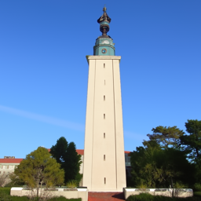
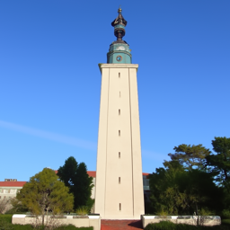

Programming Project #5 (proj5)
Programming Project #5 (proj5)CS180: Intro to Computer Vision and Computational Photography
Programming Project #5 (proj5) 

Hole Filling
Image-to-Image Translation

A Lithograph of a Waterfall
A Lithograph of a Skull

An Oil Painting of an Old Man
An Oil Painting of People Around a Fire
In part A you will play around with diffusion models, implement diffusion sampling loops, and use them for other tasks such as inpainting and creating optical illusions. Instructions can be found below and in the provided notebook.
Because part A is simply to get your feet wet with pre-trained diffusion models, all deliverables should be completed in the notebook. You will still submit a webpage with your results.
START EARLY!
This project, in many ways, will be the most difficult project this semester.We are going to use the DeepFloyd IF diffusion model. DeepFloyd is a two stage model trained by Stability AI. The first stage produces images of size $64 \times 64$ and the second stage takes the outputs of the first stage and generates images of size $256 \times 256$. Before using DeepFloyd, you must accept its usage conditions. To do so:
DeepFloyd was trained as a text-to-image model, which takes text prompts as input and outputs images that are aligned with the text. Throughout this notebook, you will see that we ask you to generate with the prompt "a high quality photo". We want you to think of this as a "null" prompt that doesn't have any specific meaning, and is simply a way for the model to do unconditional generation. You can view this as using the diffusion model to "force" a noisy image onto the "manifold" of real images.
Because the text encoder is very large, and barely fits on a free tier
Colab GPU, we have precomputed a couple of text embeddings for you to
try.
You can download the .pth file here.
This should hopefully save some headaches from GPU out of memory errors.
At the end of part A of the project, we provide you code if you want to
try your own text prompts.
In the notebook, we instantiate DeepFloyd's stage_1 and
stage_2 objects used for generation, as well as several
text
prompts for sample generation.
num_inference_steps values.You will then modify these sampling loops to solve different tasks such as inpainting or producing optical illusions.

Starting with a clean image, $x_0$, we can iteratively add noise to an image, obtaining progressively more and more noisy versions of the image, $x_t$, until we're left with basically pure noise at timestep $t=T$. When $t=0$, we have a clean image, and for larger $t$ more noise is in the image.
A diffusion model tries to reverse this process by denoising the image. By giving a diffusion model a noisy $x_t$ and the timestep $t$, the model predicts the noise in the image. With the predicted noise, we can either completely remove the noise from the image, to obtain an estimate of $x_0$, or we can remove just a portion of the noise, obtaining an estimate of $x_{t-1}$, with slightly less noise.
To generate images from the diffusion model (sampling), we start with pure noise at timestep $T$ sampled from a gaussian distribution, which we denote $x_T$. We can then predict and remove part of the noise, giving us $x_{T-1}$. Repeating this process until we arrive at $x_0$ gives us a clean image. For the DeepFloyd models, $T = 1000$. The exact amount of noise added at each step is dictated by hyperparameters, ùõº¬Øùë° , which were chosen by the people who trained DeepFloyd.
A key part of diffusion is the forward process, which takes a clean image and adds noise to it. In this part, we will write a function to implement this. The forward process is defined by:
$$q(x_t | x_0) = N(x_t ; \sqrt{\bar\alpha} x_0, (1 - \bar\alpha_t)\mathbf{I})\tag{1}$$
which is equivalent to computing $$ x_t = \sqrt{\bar\alpha_t} x_0 + \sqrt{1 - \bar\alpha_t} \epsilon \quad \text{where}~ \epsilon \sim N(0, 1) \tag{2}$$ That is, given a clean image $x_0$, we get a noisy image $ x_t $ at timestep $t$ by sampling from a Gaussian with mean $ \sqrt{\bar\alpha_t} x_0 $ and variance $ (1 - \bar\alpha_t) $. Note that the forward process is not just adding noise -- we also scale the image.
You will need to use the alphas_cumprod variable, which
contains the $\bar\alpha_t$ for all $t \in [0, 999]$.
Remember that $t=0$ corresponds to a clean image, and larger $t$
corresponds to more noise.
Thus, $\bar\alpha_t$ is close to 1 for small $t$, and close to 0 for
large $t$. The test image of the Campanile can be downloaded at here, which you should then
resize to 64x64.
Run the forward process on the test image with $t \in [250, 500, 750]$
and display the results. You should get progressively more noisy images.
Deliverables
noisy_im = forward(im, t) functionHints
torch.randn_like function is helpful for computing
$\epsilon$.alphas_cumprod variable, which contains an
array of the hyperparameters, with alphas_cumprod[t]
corresponding to $\bar\alpha_t$.
Berkeley Campanile
Noisy Campanile at t=250
Noisy Campanile at t=500
Noisy Campanile at t=750
Let's try to denoise these images using classical methods. Again, take noisy images for timesteps [250, 500, 750], but use Gaussian blur filtering to try to remove the noise. Getting good results should be quite difficult, if not impossible.
Deliverablestorchvision.transforms.functional.gaussian_blur is
useful. Here is the documentation.Noisy Campanile at t=250
Noisy Campanile at t=500
Noisy Campanile at t=750
Gaussian Blur Denoising at t=250
Gaussian Blur Denoising at t=500
Gaussian Blur Denoising at t=750
Now, we'll use a pretrained diffusion model to denoise. The actual
denoiser can be found at stage_1.unet.
This is a UNet that has already been trained on a very, very
large dataset of $(x_0, x_t)$ pairs of images.
We can use it to recover Gaussian noise from the image. Then, we can
remove this noise to recover (something close to) the original image.
Note: this UNet is conditioned on the amount of Gaussian noise by taking
timestep $t$ as additional input.
The diffusion model also needs a text prompt embedding.
We use "a high quality photo" as a suitable text prompt,
which you should use to condition the model with.
For t = [250, 500, 750], please:
stage_1.unetDeliverables
Hints
.to(device)
and .half() will be useful. The denoiser is loaded as
half precision (to save memory).stage_1.unet(image, t,
encoder_hidden_states=prompt_embeds, return_dict=False). You
need to pass in the noisy image, the timestep, and the prompt
embeddings. The return_dict argument just makes the
output nicer.with
torch.no_grad(): context. This tells torch not to do
automatic differentiation, and saves a considerable amount of
memory.Noisy Campanile at t=250
Noisy Campanile at t=500
Noisy Campanile at t=750
One-Step Denoised Campanile at t=250
One-Step Denoised Campanile at t=500
One-Step Denoised Campanile at t=750
In part 1.3, you should see that the one-step estimate of the clean image gets worse as you add more noise, but is still much better than Gaussian blurring. This makes sense, as the problem is much harder with more noise!
But diffusion models are designed to denoise iteratively. In this part we will implement this.
In theory, we could start with noise $x_{1000}$ at timestep $T=1000$, denoise for one step to get an estimate of $x_{999}$, and carry on until we get $x_0$. But this would require running the diffusion model 1000 times, which is quite slow.
It turns out, we can actually speed things up by skipping steps. The rationale for why this is possible is due to a connection with differential equations. It's a tad complicated, and not within scope for this course, but if you're interested you can check out this excellent article.
To skip steps we can create a new list of timesteps that we'll call
strided_timesteps, which does just this.
strided_timesteps will
correspond to the noisiest image (and thus the largest $t$) and
strided_timesteps[-1] will correspond to a clean image (and
thus $t =
0$). Here are conditions that strided_timesteps must
satisfy:
On the ith denoising step we are at $ t = $
strided_timesteps[i], and want to get to $ t' =$
strided_timesteps[i+1] (from more noisy to less noisy). To
actually do this, we have the following formula:
The alphas and betas are hyperparameters, and are defined as below:
The $v_\sigma$ is random noise, which in the case of DeepFloyd is also
predicted.
The process to compute this is not very important, so we supply a
function, add_variance, to do this for you.
Please implement the function iterative_denoise(image,
i_start), which takes a noisy image image, as well
as a starting index i_start.
The function should denoise an image starting at timestep
timestep[i_start], applying the above formula to obtain an
image at timestep t_prev = timestep[i_start + 1], and
repeat iteratively until we arrive at a clean image.
Please add noise to the test image im to timestep
timestep[10]. Then run the iterative_denoise
function on the noisy image, with i_start = 10.
Deliverables
iterative_denoise functionadd_variance functionadd_variance function to
figure out how to use it to add the $v_\sigma$ to the image.Noisy Campanile at t=90
Noisy Campanile at t=240
Noisy Campanile at t=390
Noisy Campanile at t=540

Noisy Campanile at t=690
Original
Iterative Denoised Campanile at t=500
One-Step Denoised Campanile
Gaussian Blurred Campanile
In part 1.4, we use the diffusion model to denoise an image. Another
thing we can do with the iterative_denoise function is to
generate images from scratch. We can do this by setting i_start =
0 and passing in random noise. This effectively denoises pure
noise. Please do this, and show 5 results of "a high quality
photo".
Deliverables
Hints
torch.randn to make the noise..half() and
.to(device).Sample 1
Sample 2
Sample 3
Sample 4
Sample 5
You may have noticed that the generated images in the prior section are not very good, and some are completely non-sensical. In order to greatly improve image quality (at the expense of image diversity), we can use a technicque called Classifier-Free Guidance.
In CFG, we compute both a conditional and an unconditional noise estimate. We denote these $\epsilon_c$ and $\epsilon_u$. Then, we let our new noise estimate be: $$\epsilon = \epsilon_u + \gamma (\epsilon_c - \epsilon_u) \tag{4}$$ where $\gamma$ controls the strength of CFG. Notice that for $\gamma=0$, we get an unconditional noise estimate, and for $\gamma=1$ we get the conditional noise estimate. The magic happens when $\gamma > 1$. In this case, we get much higher quality images. Why this happens is still up to vigorous debate. For more information on CFG, you can check out this blog post.
Please implement the iterative_denoise_cfg function,
identical to the iterative_denoise function but using
classifier-free guidance.
To get an unconditional noise estimate, we can just pass an empty prompt
embedding to the diffusion model (the model was trained to predict an
unconditional noise estimate when given an empty text prompt).
Disclaimer
Disclaimer
Before, we used "a high quality photo" as a "null"
condition.
Now, we will use the actual "" null prompt for
unconditional
guidance for CFG. In the later part, you should always use
""
null prompt for unconditional guidance and use "a high quality
photo" for unconditional generation.
Deliverables
iterative_denoise_cfg function"a high quality photo" with a CFG
scale of $\gamma=7$.Hints
add_variance function.
Sample 1 with CFG
Sample 2 with CFG
Sample 3 with CFG
Sample 4 with CFG
Sample 5 with CFG
In part 1.4, we take a real image, add noise to it, and then denoise. This effectively allows us to translate from one image to another (or "make an edit"). The more noise we add, the larger the edit will be. This works because in order to denoise an image, the diffusion model must to some extent "hallucinate" new things -- the model has to be "creative." Another way to think about it is that the denoising process "projects" a noisy image back to the "manifold" or "set" of real images.
In this part, we're going to implement SDEdit. Here, we're going to take the original test image, noise it a little, and force it back onto the image manifold without any conditioning. Effectively, we're going to get an image that is similar to the test image (with a low-enough noise level).
Please run the forward process to get a noisy test image, and then run
the iterative_denoise_cfg function using a starting index
of
[1, 3, 5, 7, 10, 20] steps and show the results, labeled with the
starting
index. You should see a series of "edits" to the original image,
gradually matching the original image closer and closer.
"a high quality photo"Hints
SDEdit with i_start=1
SDEdit with i_start=3
SDEdit with i_start=5
SDEdit with i_start=7
SDEdit with i_start=10
SDEdit with i_start=20
Campanile
We provide code in the notebook to
Deliverables
Avocado at i_start=1
Avocado at i_start=3
Avocado at i_start=5
Avocado at i_start=7
Avocado at i_start=10
Avocado at i_start=20

Original Avocado
House at i_start=1
House at i_start=3
House at i_start=5
House at i_start=7
House at i_start=10
House at i_start=20
Original House Sketch
Now, we will implement RePaint, which uses diffusion models for inpainting. That is, given an image $x_{orig}$, and a binary mask $\bf m$, we can create a new image that has the same content where $\bf m$ is 0, but new content wherever $\bf m$ is 1.
To do this, we can run the diffusion denoising loop. But at every step, after obtaining $x_t$, we "project" $x_t$ such that areas outside of the mask aligns with the original image $x_{orig}$. To do this, we can use the following update:
$$ x_t \leftarrow \textbf{m} x_t + (1 - \textbf{m}) \text{forward}(x_{orig}, t) \tag{5}$$
Essentially, we leave everything inside the edit mask alone, but we replace everything outside the edit mask with our original image, with the correct amount of noise added for timestep $t$. For more information about this method, please see this paper.
Please implement this below, and edit the picture to inpaint the top of the Campanile.
Deliverables
inpaint functionHints
forward function you implemented earlier to
implement inpainting
Campanile

Mask

Hole to Fill
Campanile Inpainted
Now, we will do the same thing as the previous section, but guide the
projection with a text prompt. This is no longer pure
"projection to image space" but also adds control using language. We
will use the test_image with the prompt "a rocket
ship".
Rocket Ship at noise level 1
Rocket Ship at noise level 3
Rocket Ship at noise level 5
Rocket Ship at noise level 7
Rocket Ship at noise level 10
Rocket Ship at noise level 20
Campanile
In this part, we will implement Visual
Anagrams to create optical illusions with diffusion models. In
this part, we will create an image that looks like "an oil
painting of a snowy mountain village", but when flipped upside
down will reveal "an oil painting of a horse".
To do this, we will denoise an image normally with the prompt
"an oil painting of a horse", to obtain noise estimate
$\epsilon_1$. But at the same time, we will take our noisy image, flip it
upside down, and denoise with the prompt
"an oil painting of a snowy mountain village", to get noise
estimate $\epsilon_2$. We can flip $\epsilon_2$ again, to make it
right-side up, and average the two noise estimates. We can then perform a
reverse diffusion step with the averaged noise estimate.
The full algorithm will be:
$$ \epsilon_1 = u(x_t, t, p_1) $$
$$ \epsilon_2 = (u(\text{flip}(x_t), t, p_2)) $$
$$ \epsilon = (\epsilon_1 + \epsilon_2) / 2 $$
where $u$ is the diffusion model unet, $\text{flip}$ is a function that flips the image, and $p_1$ and $p_2$ are two different text prompt embeddings. And our final noise estimate is $\epsilon$. Please implement the above algorithm and show example of an illusion.
Deliverablesvisual_anagrams function"an oil painting of people around a campfire" is displayed
and, when flipped, "an oil painting of an old man" is
displayed.In this part we'll implement Factorized Diffusion and create hybrid images just like in project 2.
In order to create hybrid images with a diffusion model we can use a similar technique as above. We will create a composite noise estimate $\epsilon$, by estimating the noise with two different text prompts, and then combining low frequencies from one noise estimate with high frequencies of the other. The algorithm is:
$$ \epsilon_1 = u(x_t, t, p_1) $$
$$ \epsilon_2 = u(x_t, t, p_2) $$
$$ \epsilon = f_\text{lowpass}(\epsilon_1) + f_\text{highpass}(\epsilon_2)$$
where $u$ is the diffusion model unet, $f_\text{lowpass}$ is a low pass function, $f_\text{highpass}$ is a high pass function, and $p_1$ and $p_2$ are two different text prompt embeddings. Our final noise estimate is $\epsilon$. Please show an example of a hybrid image using this technique (you may have to run multiple times to get a really good result for the same reasons as above). We recommend that you use a gaussian blur of kernel size 33 and sigma 2.
Deliverablesmake_hybrids functionskull from far away but a
waterfall from close upHybrid image of a skull and a waterfall
# Load the T5 text encoder
text_encoder = T5EncoderModel.from_pretrained(
"DeepFloyd/IF-I-L-v1.0",
subfolder="text_encoder",
load_in_8bit=True,
variant="8bit",
)
text_pipe = DiffusionPipeline.from_pretrained(
"DeepFloyd/IF-I-L-v1.0",
text_encoder=text_encoder, # pass the previously instantiated text encoder
unet=None
)
# Prompts to use. We'll let N = number of prompts
prompts = [
'reading between the lions',
'bear with me',
'a photo of a computer vision professor',
'a photo of a hipster barista',
'a photo of a dog',
'an oil painting of a snowy mountain village',
'an oil painting of a horse',
'a lithograph of waterfalls',
'a lithograph of a skull',
'', # For CFG
]
# Get prompt embeddings using the T5 model
# each embedding is of shape [1, 77, 4096]
# 77 comes from the max sequence length that deepfloyd will take
# and 4096 comes from the embedding dimension of the text encoder
prompt_embeds = [text_pipe.encode_prompt(prompt) for prompt in prompts]
prompt_embeds, negative_prompt_embeds = zip(*prompt_embeds)
prompt_embeds_dict = dict(zip(prompts, prompt_embeds))
# Save prompt embeds
save_path = 'prompt_embeds_dict.pth'
torch.save(prompt_embeds_dict, save_path)
This project was a joint effort by Daniel Geng, Hang Gao, and Ryan Tabrizi, advised by Liyue Shen, Andrew Owens, and Alexei Efros.
{kind=link}